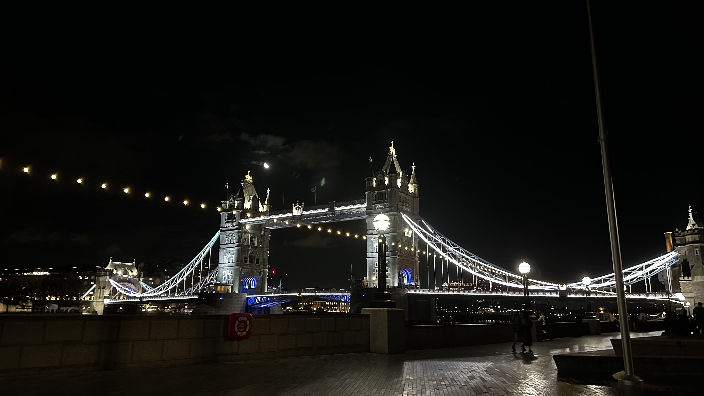

Vintage Landmarks
London's history is full of antiquity, resilience, and cultural richness. From its humble Roman beginnings as Londinium in 43 AD, the city evolved into a global trading hub with iconic landmarks along the way, including some I will talk about shortly . Over the centuries, London witnessed the rise and fall of empires, survived the Great Fire of 1666, and embraced the Victorian era's technological marvels. The scars of World Wars I and II left indelible marks on its landscape, yet the city emerged from the rubble stronger than ever.
Tower Bridge
One very interesting icon of London that attracted me was Tower Bridge. This bridge was an engineering miracle at the time as the river was still used for trading. The dilemma of having a bridge that didn’t interfere with boats passing through always kept engineers brainstorming. So, the idea for a folding bridge was born. Completed in 1894, it is known for its distinctive towers and drawbridge mechanism. The bridge connects the Tower of London on the north bank to Southwark on the south bank, providing both a road and pedestrian crossing.
Hyde Park

After walking for a while, I wanted to chill in a park. I headed to Hyde Park was originally acquired by King Henry VIII from the monks of Westminster Abbey in 1536 as part of the larger dissolution of the monasteries. At that time, it was used as a hunting ground Later on in the 17th century, specifically in 1637, King Charles I opened Hyde Park to the public, and it became a popular venue for various recreational activities such as horse racing, duelling, and military reviews An integral part of the park today, Speakers Corner, was opened in the mid 19th century, allowing the locals to speak freely without consequences. Hyde Park today is home to several memorials and monuments, including the Diana, Princess of Wales Memorial Fountain, the Holocaust Memorial, and even more. Unfortunately, I didn’t get the chance to see the whole park as I had to check out the city
Buckingham Palace
Next is Buckingham Palace, which is the official residence and administrative headquarters of the British monarch. It is a symbol of the British Empire and a place that fascinated me because of its architecture. Originally built in the 18th century, it became the monarch's official residence in 1837, when Queen Victoria was in power. It suffered from bomb damage during World War II, but got fixed and renovated after the war. Tourists love checking out the changing of the guard show near the gates of the palace. Unfortunately, I came during winter so I couldn’t enter the State Rooms, which is open to the public during the summer.
Big Ben
While I was biking in Westminster, I kept hearing chimes all over the area, I then realised that It was Big Ben. This tower is one of the most iconic landmarks of the city. The name originally was referred to the Great Bell inside the tower, but over time, it is now used to describe the entire clock tower. Completed in 1859, the clock tower was designed by architect Augustus Pug. The tower stands at the north end of the Palace of Westminster, which houses the UK Parliament. The clock inside the tower is known for its accuracy and size. It has four clock faces, each over 7 metres in diameter, with a complex mechanism designed by Edmund Beckett Denison and Sir George Airy.
Trafalgar Square
Next is Trafalgar Square. It’s named after the victory of Trafalgar, a naval battle fought on October 21, 1805, during the Napoleonic Wars between the British Royal Navy and the combined fleets of France and Spain. The battle took place off the coast of Cape Trafalgar in southwestern Spain. The British established itself as a major naval battle due to this victory. The square features a monument honouring Admiral Lord Nelson, with noteworthy landmarks nearby such as the National Gallery and St. Martin in the Fields church. My experience here was a group of buskers making everyone wait for a trick that they didn't do at the end.